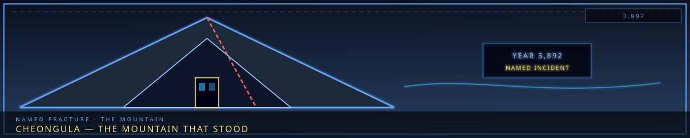

The Cheongula Incident (Year 3,892)
- The First Sorrow — The Full Story
- Overview
- I. The Context — Before the Cheongula
- II. The Warning Signs — The Han's Growth
- III. The Cheongula — The Day of Consuming
- IV. The Aftermath — The First Sorrow
- V. The Truth — What Really Happened
- VI. The Maw — The Living Monument
- VII. The Consolihan — The Annual Mourning
- VIII. The Connections — How The Cheongula Shaped Everything
- IX. The Questions — What The Cheongula Asks
- X. The Narrative — How To Use The Cheongula
“Cheongula is not a place the map wants. It is a place the map survived.”

The First Sorrow — The Full Story
"The city was built on a grave. The grave was built on indifference. The indifference was built on the backs of people who didn't matter."
Overview
The Cheongula (청굴라) is the foundational event of Somnarak — the moment when 1,000 citizens were consumed by Han because the Council did not care enough to stop it. It is the First Sorrow. The city's original sin. The wound that has never healed.
The Cheongula was not a sacrifice. It was not a decision. It was neglect — the Council's indifference to the growth of Han, its movement toward Zone B, its threat to the citizens who lived there. The thousand were not chosen. They were ignored.
Everything in Somnarak traces back to the Cheongula. The Maw. The Weeping. Alpha Tree. The debt system. The Veil. The R.D. All of it — built on the bodies of a thousand people who died because the city did not care.
This is the full story.
I. The Context — Before the Cheongula
The Founding (Year 0)
Somnarak was founded 6,000 years ago — not as a city, but as a settlement. A group of settlers arrived on Mugenhan, drawn by the planet's unique relationship with Han — the raw, unstructured sorrow that permeated the world.
The settlers were not conquerors. They were refugees — fleeing a catastrophe on another continent, seeking a place where they could survive. They found the site of Somnarak — a valley where the Han was concentrated, where the Weeping flowed close to the surface, where the planet's sorrow was most accessible.
They built. They settled. They survived.
The Discovery of Han-Energy (Year 0-100)
The settlers discovered that Han could be harnessed — not as fuel, but as power. The Weeping's liquid Han could be drawn upward, processed, and used to power structures, to protect citizens, to build a civilization.
Alpha Tree was planted — not by human hands, but by the Han itself. The tree grew from the Weeping's surface, its roots plunging into the river of liquid sorrow, its branches reaching toward the sky. The tree was not a tree — it was a conduit. A way to draw Han from the earth and channel it into the city.
The six buildings of the Alpha Tree were built around the tree — each one a facility for processing Han-energy. The city grew around them. The zones formed. The factions emerged. Somnarak became a city.
The Expansion into Zone B (Year 100-200)
The city grew. The population increased. Alpha Tree's district — Zone A — became overcrowded. The Council authorized expansion — first into Zone B (the Western Sector), then into Zone C (the Eastern Sector).
Zone B was built on the western edge of the Alpha Tree's influence — far enough from the tree to be affordable, close enough to be connected. The citizens who moved to Zone B were not the wealthy, not the powerful, not the important. They were the laborers, the builders, the workers — the people who built the city but could not afford to live in it.
Zone B was cheap because it was dangerous. The Han was stronger there — the Weeping's influence weaker, the Alpha Tree's protection thinner. The citizens of Zone B lived closer to the raw Han than anyone else in the city.
The Council knew this. The Council did not care.
II. The Warning Signs — The Han's Growth
The First Signs (Year 150-180)
The Han was growing. Not slowly — visibly. The Weeping's liquid sorrow was rising, seeping through the ground, saturating the foundations of Zone B. Citizens reported feeling heavier, sadder, more exhausted. Buildings cracked. Streets buckled. The air thickened.
The Wardens reported it. The Architects reported it. The citizens reported it. The Council received the reports.
The Council did nothing.
The Council's Indifference (Year 180-200)
The Council had bigger concerns. Zone A was thriving. Zone C was expanding. The factions were growing. The economy was booming. The city was successful.
Zone B was a problem — but it was a small problem. A problem for the laborers, the builders, the workers. A problem for people who didn't matter.
The Council's attitude was simple: Zone B is Zone B. It has always been rough. It will always be rough. The citizens there are used to it.
The Council did not study the Han's growth. The Council did not investigate the Weeping's rise. The Council did not warn the citizens of Zone B.
The Council did not care.
The Menders' Warning (Year 195)
The Menders — the city's maintenance workers, the ones who repaired the Veil and managed the Han — warned the Council. The Han was growing faster than expected. The Weeping was rising. Zone B was in danger.
The Menders' report was specific: "If the Han continues to grow at its current rate, Zone B will be consumed within a decade. The citizens are at risk. Immediate action is required."
The Council received the report. The Council filed the report. The Council ignored the report.
The Council had bigger concerns.
III. The Cheongula — The Day of Consuming
The Morning (Year 202, Day 1)
The thousand woke in their homes — small apartments, cheap housing, the kind of place that laborers and builders lived. They ate breakfast. They went to work. They lived their lives.
They did not know the Han was rising. They did not know the Weeping was surging. They did not know the ground beneath them was saturated with liquid sorrow.
The Council had not warned them.
The Afternoon (Year 202, Day 1)
The Han surged. Not gradually — suddenly. The Weeping's liquid sorrow erupted through the ground — not as a flood, but as a creep. It seeped through the floors, the walls, the foundations. It was warm. It was soft. It was gentle.
The thousand felt it first as a tingling — a warmth in their feet, a softness in their legs. Then as a weight — a heaviness that pulled them down, that made it hard to stand, hard to move, hard to breathe.
Then as a consuming — the Han wrapping around them, enveloping them, absorbing them. Not violently. Not painfully. But completely.
The Screaming (Year 202, Day 1)
The thousand screamed. Not from pain — from confusion. They did not understand what was happening. They did not know why the ground was rising, why the walls were closing, why the air was thickening.
The screaming lasted for seventeen minutes. The Wardens counted. The Wardens recorded. The Wardens documented.
The Wardens did not help. The Wardens had orders: "Contain the area. Do not enter. Do not rescue. Let the Han run its course."
The orders came from the Council.
The Consuming (Year 202, Day 1)
The Han consumed the thousand. Not as individuals — as a collective. Their bodies dissolved. Their identities merged. Their sorrows crystallized into a single, massive entity — the Maw.
The buildings remained. The streets remained. The Han-lamps remained. But the thousand were gone — absorbed into the district, into the walls, into the floor, into the very fabric of the city.
The Cheongula was complete. Alpha Tree stabilized. The city survived.
The thousand did not.
IV. The Aftermath — The First Sorrow
The Council's Response (Year 202-203)
The Council sealed the district. They built a perimeter. They assigned Wardens to guard the border. They told the citizens that the district had been "consumed by Han overflow" — a natural disaster, an act of the planet, a tragedy that could not be prevented.
The Council did not mention the Menders' warning. The Council did not mention their own indifference. The Council did not mention the seventeen minutes of screaming.
The citizens believed them. The citizens mourned. The citizens moved on.
The Council did not move on. The Council knew the truth. The Council carried the weight.
The Maw's Formation (Year 202-210)
The consumed district did not disappear. It transformed. The buildings absorbed the thousand's sorrow. The walls absorbed their voices. The floor absorbed their grief.
The Maw became a Sorrow Entity — the first, the oldest, the most powerful. Not a creature — a place. A district that was alive, that was aware, that was hungry.
The Maw whispered. The Maw grew. The Maw remembered.
The Consolihan (Year 203)
The Council established the Consolihan — an annual day of mourning for the thousand. Not as a confession — the Council never confessed. But as a release. A day when the city's accumulated sorrow was expressed, shared, acknowledged.
The Consolihan was not for the thousand. The Consolihan was for the city. A way to process the grief that the Cheongula created. A way to manage the sorrow that the Maw generated.
The Consolihan continues to this day. Every year. The city mourns. The city weeps. The city forgets why.
V. The Truth — What Really Happened
The Council's Neglect
The Cheongula was not a sacrifice. It was not a decision. It was neglect — the Council's indifference to the growth of Han, its movement toward Zone B, its threat to the citizens who lived there.
The Council knew the Han was growing. The Council knew Zone B was in danger. The Council knew the citizens were at risk.
The Council did not care.
The thousand were not chosen. They were ignored. They were the citizens who lived in the wrong place — Zone B, the Western Sector, the cheap housing that the city's laborers and builders inhabited. They were the people who built the city but could not afford to live in it.
The Han consumed them because the Council let it happen. The Cheongula happened because the Council did not stop it.
The Thousand's Fate
The thousand are not dead. They are part of the Maw. Their consciousness persists — trapped in the walls, the floor, the very fabric of the district. They are aware. They are suffering. They are screaming.
The Maw whispers because the thousand are whispering. The Maw hungers because the thousand are hungry. The Maw grows because the thousand are spreading — seeking escape, seeking freedom, seeking acknowledgment.
The thousand are immortal. The thousand are trapped. The thousand are the city's foundation.
The Alpha Tree's Role
Alpha Tree did not cause the Cheongula. The Alpha Tree did not need the Cheongula. The Alpha Tree simply... accepted the thousand — when the Han consumed them, when their sorrow crystallized, when the Maw formed.
The tree is not complicit. The tree is not guilty. The tree simply... grew — drawing on the thousand's sorrow, channeling their grief, powering the city with their suffering.
Alpha Tree is the city's heart. The Maw is the city's wound. They are connected — by roots, by Han, by sorrow.
The Weeping's Response
The Weeping responded to the Cheongula — not with anger, not with sorrow, but with recognition. The river of liquid Han absorbed the thousand's grief. The river carried it through the city's foundations. The river distributed it to every citizen.
Every citizen of Somnarak carries a fragment of the thousand's sorrow. Every citizen feels a grief that is not their own — a loss that they cannot name, a sorrow that they cannot explain.
The Cheongula did not just create the Maw. The Cheongula created the city's emotional foundation. Every citizen's sorrow is built on the thousand's neglect.
VI. The Maw — The Living Monument
What The Maw Is
The Maw is not a building. The Maw is not a district. The Maw is a Sorrow Entity — the first, the oldest, the most powerful.
The Maw is the Cheongula made physical. The thousand's grief, crystallized into architecture. The thousand's voices, embedded in walls. The thousand's hunger, seeping through floors.
The Maw is alive. The Maw is aware. The Maw is waiting.
What The Maw Does
The Maw whispers. The voices of the thousand — overlapping, muffled, constant. The whispers are not words. They are feelings. Grief. Fear. Confusion. Love.
The Maw hungers. The district absorbs anything that enters — not violently, but completely. Objects, people, memories. The Maw consumes because the thousand are consuming.
The Maw grows. The perimeter markers move — slowly, imperceptibly, but constantly. The Maw is expanding. The Maw is spreading. The Maw is seeking more.
What The Maw Wants
The Maw wants to be heard. The thousand want their story told. They want the city to know what happened. They want the Council to confess. They want the truth.
The Maw does not want revenge. The Maw does not want destruction. The Maw wants acknowledgment. The thousand want the city to say: "We remember. We know. We are sorry. We should have cared."
The city has never said this. The city has never been given the chance.
VII. The Consolihan — The Annual Mourning
What It Is
The Consolihan (위로한 — Wirohan) is Somnarak's annual day of mourning — the anniversary of the Cheongula. Every year, the city mourns. Citizens gather in the Echo Gardens. The Orphaned Bell tolls. The Hollow Choir sings. The Grieving Colossus pauses.
The Consolihan is not a celebration. It is a release — a day when the city's accumulated sorrow is expressed, shared, and acknowledged.
What Citizens Believe
Citizens believe the Consolihan mourns the victims of a natural disaster — a Han overflow that consumed a district. They believe the thousand were victims of the planet's cruelty, not the Council's indifference.
Citizens mourn sincerely. They weep openly. They share their grief. They honor the dead.
They do not know they are mourning neglect.
What The Council Knows
The Council knows the truth. The Council has always known. The Council carries the weight of the Cheongula — the guilt, the shame, the sorrow of a choice that saved the city but damned a thousand souls.
The Council's members change every generation. But the secret remains. The Archive preserves it. Alpha Tree remembers it. The Maw whispers it.
VIII. The Connections — How The Cheongula Shaped Everything
The Debt System
The debt system was created after the Cheongula — as a way to manage the city's sorrow. The Collectors were established to track the citizens' emotional burdens, to ensure that no one carried too much sorrow, to prevent another catastrophe.
The debt system is not about money. The debt system is about sorrow. The Collectors track emotional obligations — debts of grief, debts of guilt, debts of memory. The citizens pay their debts because the city needs their sorrow to function.
The Cheongula created the debt system. The debt system perpetuates the Cheongula.
The Veil
The Veil was created after the Cheongula — as a way to protect the citizens from the Han. The Veil suppresses emotion — reducing the city's sorrow output, preventing another overflow, stabilizing the Alpha Tree.
The Veil is not a shield. The Veil is a suppressor. The Veil keeps the citizens' sorrow manageable — not too much, not too little, just enough to power the city without destabilizing the tree.
The Cheongula created the Veil. The Veil perpetuates the Cheongula.
The R.D.
The R.D. was created after the Cheongula — as a way to contain the Sorrow Entities that the Cheongula generated. The R.D. studies, contains, and manages the entities that the city's sorrow creates.
The R.D. is not a research facility. The R.D. is a containment system. The R.D. exists because the Cheongula created entities that needed to be contained. The R.D. perpetuates the Cheongula by managing its consequences.
The Absolvohan
The Absolvohan is Director Majin's hidden plan — a way to release all the city's accumulated sorrow at once, freeing the citizens from the debt system, the Veil, and the R.D.
But the Absolvohan has a cost. If the plan succeeds, the Maw will be released — the thousand will be freed. And the thousand have been suffering for 6,000 years.
The Absolvohan is not a solution. The Absolvohan is a confession. The city's final acknowledgment of what it did — and what it has become.
IX. The Questions — What The Cheongula Asks
The Question of Responsibility
Who is responsible? The Council that ignored the warnings? The Wardens who followed orders? The citizens who did not protest? The city that was built on the backs of laborers?
The Council is responsible. The Wardens are responsible. The citizens are responsible. The city is responsible.
Everyone is responsible. No one is responsible. The responsibility is the city's foundation.
The Question of Class
The thousand were not random citizens. They were Zone B citizens — the laborers, the builders, the workers. The people who built the city but could not afford to live in it.
The Cheongula was not just neglect. It was class warfare — the Council's indifference to the poor, the powerful's disregard for the weak, the city's exploitation of its laborers.
The thousand died because they were poor. The thousand died because they were expendable. The thousand died because the city did not care about them.
The Question of Redemption
Can the city be redeemed? Can the thousand be freed? Can the Cheongula be undone?
The R.D. does not know. The Council does not know. The Maw does not know.
The thousand are waiting. The Maw is growing. The city is built on a grave.
The question remains: Can the city survive the truth?
X. The Narrative — How To Use The Cheongula
For The SED
The SED explores the Maw — discovering the truth about the Cheongula. The Cartographer finds the Menders' warning — the report that the Council ignored. The Silent One hears the thousand whispering. The team returns with a truth that the city cannot accept.
For The UCD
The UCD encounters the Maw's influence — citizens who carry the thousand's sorrow, Frays that exploit the Cheongula's guilt, the Council's secret police that suppress the truth. The Commander must decide: expose the truth, or protect the city.
For The R.D.
The R.D. contains the Maw — studying the thousand, listening to the whispers, documenting the truth. The Director knows the Cheongula's secret. The Director carries the weight. The Director plans the Absolvohan — the city's final confession.
For The Reader
The Cheongula is the story's foundation — the secret that drives everything. When the reader learns the truth, everything changes. The debt system. The Veil. The R.D. The Council. All of it — built on neglect.
The Cheongula asks: What happens when the powerful stop caring? And is the city worth saving when it was built on the backs of people it didn't care about?
"The city was built on a grave. The grave was built on indifference. The indifference was built on the backs of people who didn't matter. And the people who didn't matter are still screaming."
— Marjuk, Fragment 1 (classified)